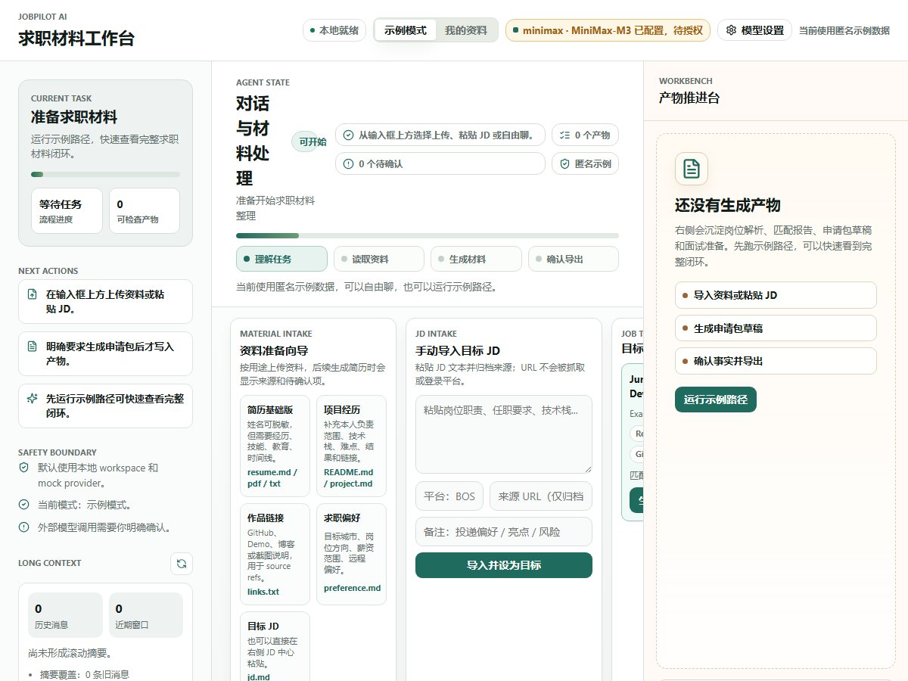
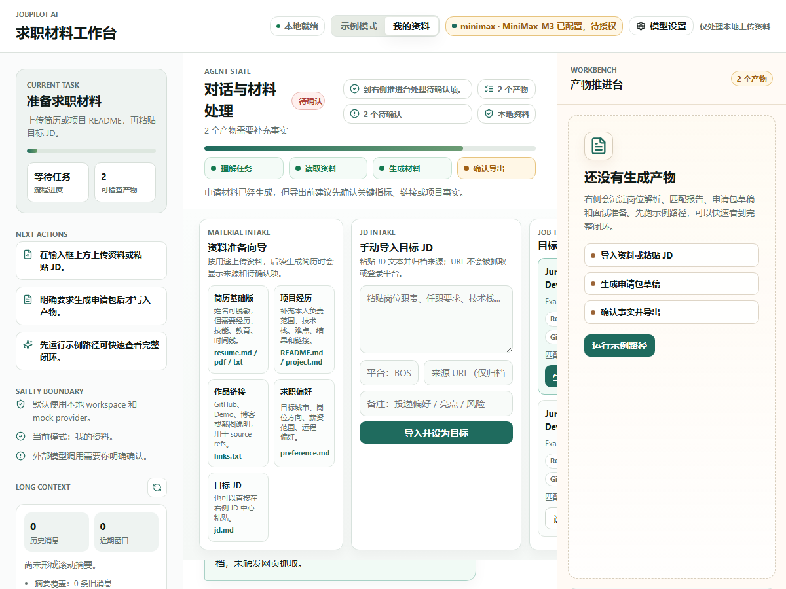
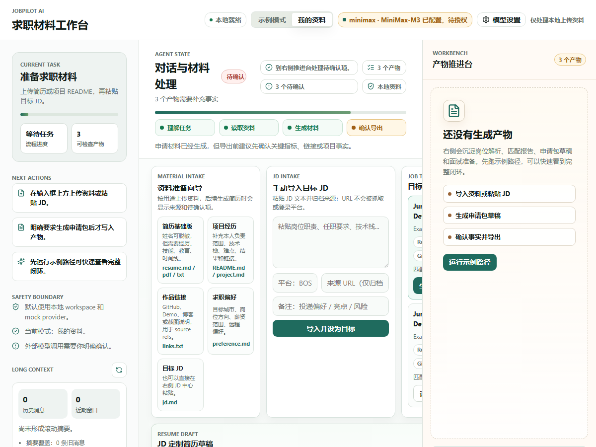
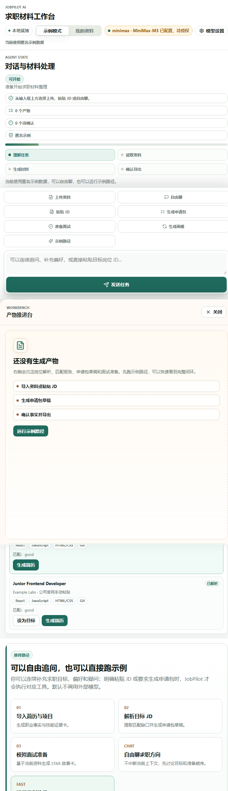
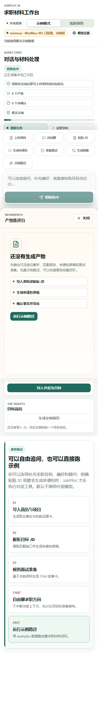

目标架构
- Chatbox UI：资料准备向导、JD Intake Center、Job Target List、Resume Generation Plane。
- API Boundary：/api/files/upload?kind=...、POST /api/job/intake、GET /api/jobs、POST /api/jobs/{job_id}/select、POST /api/resume/generate。
- Domain Tools：复用 save_document、extract_facts、parse_jd、match_profile、create_application_package、resume_version。
- Storage：document.kind、job.source_url/platform/import_method/user_notes/is_current_target、match_report、resume_version、application_package、artifact_version。
- Evidence：专项 eval、headless 截图、中文 HTML 报告和未验证范围说明。
当前实现
- 前端在现有单文件 Chatbox 中增量加入 P8 工作区，保持三栏桌面和移动抽屉模型。
- 后端新增 P8 路由，旧 parse-jd、application package、export 仍保持兼容。
- SQLite 只做非破坏性加列迁移；不删除历史数据，不引入平台账号或 API Key 存储。
- 定制简历生成返回 resume_version_id、source_refs、pending_confirmations 和 export_preflight。
自动化步骤
| # | 步骤 | 动作 | 结果 |
|---|---|---|---|
| 1 | 打开 P8 Chatbox | goto | passed |
| 2 | 等待资料准备向导 | waitText | passed |
| 3 | 桌面初始 P8 工作区 | screenshot | passed |
| 4 | 粘贴 JD 文本 | fill | passed |
| 5 | 填写平台 | fill | passed |
| 6 | 填写来源 URL | fill | passed |
| 7 | 填写备注 | fill | passed |
| 8 | 导入 JD | clickText | passed |
| 9 | 等待 JD 导入异步刷新 | wait | passed |
| 10 | JD 导入与岗位列表 | screenshot | passed |
| 11 | 生成定制简历 | clickText | passed |
| 12 | 等待简历草稿 | waitText | passed |
| 13 | 定制简历结果 | screenshot | passed |
| 14 | 720px 响应式视图 | goto | passed |
| 15 | 等待 720px | waitText | passed |
| 16 | 720px P8 工作区 | screenshot | passed |
| 17 | 390px 响应式视图 | goto | passed |
| 18 | 等待 390px | waitText | passed |
| 19 | 390px P8 工作区 | screenshot | passed |
验收标准
- 用户能看到需要提供哪五类资料，上传时资料带 kind 入库。
- 用户能手动粘贴 JD，保存平台、来源 URL 和备注；URL 不触发抓取。
- 用户能看到多个 JD 并切换当前目标岗位。
- 用户能基于当前目标 JD 生成定制简历草稿，并看到 source refs、待确认项和导出前检查。
- 报告明确未验证真实 provider、真实个人资料和招聘平台自动化。
命令结果
| 命令 | 状态 | 证据 |
|---|---|---|
.venv/bin/python -m pytest tests/evals/test_p8_jd_intake_resume_generation_eval.py | passed | 3 passed，覆盖 P8 API、DB、ChatCore intent。 |
.venv/bin/python -m pytest tests/evals/test_p8_acceptance_report_eval.py | passed | 2 passed，覆盖 HTML 报告结构、截图证据和 false-green 禁止语。 |
npm --prefix apps/chatbox run build | passed | TypeScript 与 Vite build 通过。 |
API evidence JSON: docs/reports/evidence/p8_jd_intake/p8_api_evidence.json | passed | resume_version=resume_9acb794494d8，blocking=2。 |
PRD 规格检视
| PRD / Gate 要求 | 证据 | 结论 |
|---|---|---|
| 资料准备向导让用户知道需要提供什么 | 页面包含简历、项目、作品、偏好、JD 五类卡片；upload kind 写入 document.kind。 | PASS |
| JD 手动导入，不抓取平台 | JD 已手动导入并设为当前目标岗位。source_url 仅作为来源归档，未触发网页抓取。 | PASS |
| 多 JD 列表和当前目标岗位 | GET /api/jobs 返回 1 个岗位，并含 is_current_target。 | PASS |
| JD 定制简历 source refs / pending confirmations / export preflight | source refs 14，待确认 3，blocking 2。 | PASS |
| 不声明真实 provider、真实资料、平台自动化通过 | 报告未验证范围独立列出。 | PASS |
代码检视
| 区域 | 结论 | 级别 |
|---|---|---|
| API | 新增路由复用现有 run_tool 错误映射；未绕过 provider policy。 | passed |
| Storage | job 表只新增可空/默认列，迁移非破坏性。 | passed |
| ChatCore | 生成简历是显式 intent；普通聊天带“不要生成”不会写入新产物。 | passed |
| Frontend | P8 面板位于输入区上方，按钮和文字在多断点下有独立响应式规则。 | passed |
文档审计
| 区域 | 结论 | 状态 |
|---|---|---|
| P8 docs | 实现边界与 P8 文档一致：手动 JD 导入、资料向导、定制简历。 | passed |
| False green | 平台自动化、真实 provider、真实个人资料均未写成通过。 | passed |
多背景多轮对话补证
Scenario did not define multi-turn dialogue evidence.
截图证据

evidence/p8_jd_intake/p8_desktop_initial.png
evidence/p8_jd_intake/p8_desktop_job_intake.png
evidence/p8_jd_intake/p8_desktop_resume_generated.png
evidence/p8_jd_intake/p8_tablet_720.png
evidence/p8_jd_intake/p8_mobile_390.png未验证范围与审计意见
- 未接入 BOSS/猎聘/拉勾等招聘平台账号、登录、抓取、自动沟通或自动投递。
- 未调用真实外部 LLM provider；本报告不证明真实 provider 质量。
- 未使用用户真实个人资料；本报告使用 examples 和受控真实感 fixture。
- source_url 只作为归档证据保存，没有执行网页抓取。
P8 自动化候选通过：已能支撑资料准备、手动 JD 导入、多 JD 目标选择和 JD 定制简历的本地/mock 闭环。产品化前仍需真实资料、真实 provider 和招聘平台合规能力的独立授权验收。